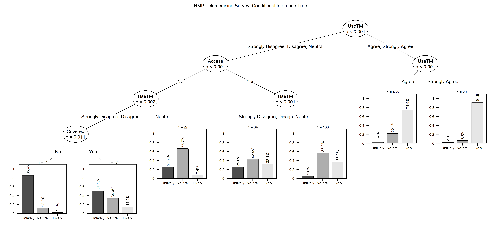

The objective of this survey was to determine what factors engender telemedicine advocacy, and to capture the willingness of the audience to act in favor of telemedicine
Greater personal confidence in telemedicine \(\rightarrow\) Greater propensity to act
The questionnaire for this survey is located here.
We created two different versions of this survey to distribute to our existing Mailchimp email list and more broadly to Facebook via advertising. The surveys were identical except for an email capture element included on the Facebook version of the survey.
We conducted a pre-test of the survey, in which we served the survey to a random 10% sample of the email list (1,831 emails) and then to the rest of the list (16,535 emails)
| Opens | Clicks | Starts | Completions | |
|---|---|---|---|---|
|
10% Sample (1,831 emails) |
356 (19.4%) |
61 (3.3%) |
54 |
43 (79.6%) |
|
90% Sample (16,535 emails) |
3,596 (21.7%) |
565 (3.4%) |
551 |
441 (80.0%) |
|
Total (18,366 emails) |
3,952 (21.5% |
623 (3.4%) |
605 |
484 (80.0%) |
For the Facebook version, we advertised the survey over six days, from February 2nd to February 8th. Out of 1,842 survey starts, we received 531 completions - which corresponds to a 28.8% completion rate.
The questions were coded as follows:
| Variable | Question | Responses |
|---|---|---|
| UseTM | To what degree do you agree or disagree with the statement, “If given the chance, I would use telemedicine services more often?” | Strongly Disagree, Disagree, Neither Agree or Disagree, Agree, Strongly Agree |
| Covered | Do you believe telemedicine services should be covered by insurance? | Yes, No |
| Access | Do you believe using telemedicine services can improve access to health care? | Yes, No |
| Quality | For appropriate health care services, do you believe the quality of care received via telemedicine is higher than, similar to, or lower than the quality of care received in an in-person visit? | Lower, Similar, Higher |
| ContactLeg | In the past year, have you contacted your legislators about an issue important to you? | Yes, No |
| SupportLeg | How likely would you be to support a legislator if they endorse increased access to telemedicine services for all Pennsylvanians? | Extremely Unlikely, Unlikely, Neutral, Likely, Extremely Likely |
The outcome of interest we are looking to gauge is the SupportLeg variable. Using all the other variables, we seek to predict the likelihood of a respondent supporting a legislator if they endorse increased access to telemedicine services for all Pennsylvanians.
The graphs below show the distribution of each variable and the distribution of the SupportLeg variable.
There are distinct relationships between those that would opt toward using telemedicine services more often, those that believe that telemedicine services should be covered by insurance, those that believe using telemedicine services can improve access to health care, and the likelihood of supporting a legislator who endorses increased access to telemedicine services.
In order to parse out these relationships, a probabalistic model is employed, where SupportLeg is the output variable - the variable the model predicts - and the other five variables are inputs.
The Random Forest algorithm samples the input variables from a dataset and builds multiple “random” decision trees, which it aggregates to create a decision tree that can accurately classify communities based on these variables. This algorithm also allows us to compare the effect of each input variable on the outcome, relative to all other variables.
Below I create a model with smaller number of categories. I group together “Extremely Unlikely” and “Unlikely” as well as “Extremely Likely” and “Likely”:

According to the model, the most predictive variables out of all those that we tested is UseTM, which measures the extent to which the respondent would opt for using telemedicine services more often. The mean increase in accuracy of the model in predicting SupportLeg is ten times greater for UseTM than any other variable.
Using UseTM, We can accurately classify ~80% of respondents as either unlikely or likely to support a legislator who endorses increased access to telemedicine services.